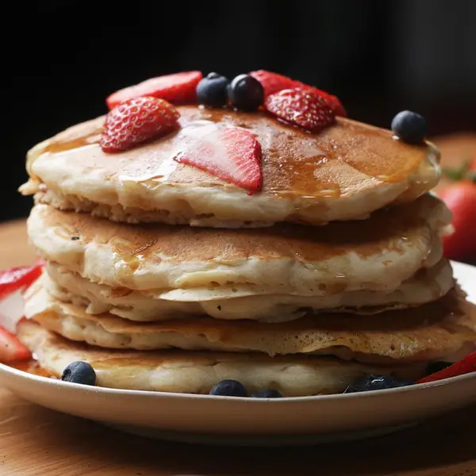

Fluffy Pancakes

A yummy vegan Pancake recipe
Why not try something new ? Ever had a vegan pancake before ?
If not, try this recipe, it will not disappoint !
Ingredients
for 4 servings
- 1 cup flour(125g)
- 2 tablespoons organic sugar
- 1 tablespoon baking powder
- Half a teaspoon of salt
- 1 cup non-dairy milk(240 mL)
- 1 tablespoon apple cider vinegar
- 1 teaspoon vanilla
- Don't forget the mable syrup !
Preparation
- In a medium bowl, add the flour, sugar, baking powder, and salt, and stir to combine.
- In a medium bowl or liquid measuring cup, add almond milk, apple cider vinegar, and vanilla, and stir to combine
- Pour the liquid mixture into the dry mixture and whisk until smooth.
- Let batter rest for 5 minutes.
- Pour about ½ cup (65 grams) of batter onto a nonstick pan or griddle over medium heat.
- When the top begins to bubble, flip the pancake and cook until golden.
- Serve warm with maple syrup.
Return to Home